Em equipes pequenas, decisões importantes ficam espalhadas em conversas de WhatsApp: orçamento de um projeto, pagamento combinado, visita a um cliente. Encontrar essa informação depois exige reler a conversa, e registrar à mão gera erros.
A Secretária IA lê o backup de uma conversa, responde perguntas citando a mensagem de origem, consulta dados da empresa (clientes, agenda, financeiro) e propõe registros, como uma visita ou um cadastro de cliente. Nenhum registro definitivo é gravado pelo modelo: a confirmação é sempre uma ação explícita do usuário, executada em Python.
Toda a demonstração usa um corpus fictício de 40 mensagens (três funcionários: ana, bruno e carla; três projetos: Alfa, Beta e Gama) com gabarito. O backup real, que contém dados internos, ficou fora do Git e nunca foi enviado a APIs externas nem ao LangSmith.
O agente é híbrido: o modelo de linguagem interpreta o pedido e escolhe as ferramentas; regras em Python controlam o que não pode depender de interpretação, como parsing, dinheiro, datas, permissões e gravações.
O agente tem 11 ferramentas:
| Tipo | Ferramentas |
|---|---|
| Consulta ao SQLite | buscar_cliente, consultar_projeto, consultar_financeiro_projeto, consultar_disponibilidade |
| Mensagens da conversa | listar_corpora_acessiveis, buscar_mensagens_fonte (RAG), consultar_mensagens_estruturado (text-to-query) |
| APIs externas | consultar_cep_viacep, consultar_cnpj_minha_receita |
| Propostas (sem gravar) | propor_visita, propor_cadastro_cliente |
Cada fase tem um notebook executável, sem chave de API e com dados fictícios: notebooks/fase1_… a fase5_….
Uma chain LCEL ChatPromptTemplate | modelo | PydanticOutputParser lê as mensagens em lotes e extrai
projeto, valores, datas e tipo de ato (pergunta, previsão, relato, confirmação), sempre com a mensagem de origem. A mesma
sequência foi escrita com @chain para comparar o estilo declarativo com o imperativo. São demonstrados
invoke, batch e stream. O stream devolve o objeto completo, não tokens, porque uma
saída estruturada só tem valor depois de validada. Saída inválida ou fonte inexistente faz o lote falhar de forma explícita,
sem declarar cobertura completa.
O atendimento usa create_agent do LangChain 1.x, que monta um grafo LangGraph e executa o ciclo ReAct
(modelo → ferramenta → observação → modelo). O prompt segue PTCF (pessoa, tarefa, contexto, formato) com exemplos
few-shot. Antes do agente, um roteador (RunnableLambda) classifica o pedido em visita, cliente, projeto, fonte,
consulta ou geral; a rota é uma dica, não um bloqueio. O callback RastroAgente registra eventos de modelo e
ferramenta sem copiar conteúdo privado. Foram comparados três orquestradores: chain fixa, create_agent e grafo
LangGraph escrito à mão. O create_agent foi escolhido porque a ordem das consultas varia conforme o pedido, e
um grafo próprio não traria ganho para um agente desse tamanho.
A memória segue a divisão do CoALA:
invoke;text-embedding-3-small) escolhe os relevantes;A conversa é retomada depois de reiniciar o programa, e cada usuário tem histórico separado. LangMem e Mem0 foram comparados. O SQLite foi mantido por ser local e auditável.
As mensagens são indexadas uma vez no FAISS, somente depois de o usuário autorizar o envio à OpenAI. A busca carrega o índice existente, confere a versão do corpus e devolve o trecho com o ID da mensagem.
Para contagens e listas, uma busca por semelhança não serve, porque o top-k não é um inventário. Por isso existe o
text-to-query: o modelo gera um plano tipado e o Python o valida e executa um SELECT parametrizado.
Uma falha real de ranking foi diagnosticada e corrigida: no projeto Gama, uma mensagem que só perguntava pelo saldo ficava acima da que explicava por que ele não era calculável.
Financeiro. Registra orçamento proposto e aceito, parcelas, pagamento informado e confirmado, e estorno com auditoria. O saldo só muda com pagamento confirmado, e um perfil sem permissão não acessa o financeiro.
Verificação. Antes de exibir uma resposta, o verificador aplica regras fixas: uma contagem precisa da consulta estruturada, e um valor em reais precisa aparecer no relatório financeiro. Depois, um juiz LLM confere se as afirmações são sustentadas pelas ferramentas. Ele tem uma tentativa de reparo; se ela falhar, a resposta vira uma mensagem segura.
Interface. O Streamlit tem as abas Conversa, Fontes, Revisão, Agenda e Financeiro, com o mesmo agente e o mesmo banco do terminal.
Avaliação. Feita com o LangSmith (seção 5).
Classes antigas da rubrica. Na aula 08, o professor orientou que as funções antigas não são exigidas, desde que a escolha seja justificada e o conceito apareça funcionando. As equivalências usadas:
| Citado no enunciado | Usado no projeto |
|---|---|
initialize_agent, AgentExecutor, create_openai_tools_agent | create_agent com function calling da OpenAI |
RouterChain | roteador_pedido (RunnableLambda) antes do agente |
ConversationBufferMemory, RunnableWithMessageHistory | Histórico por usuário e sessão no SQLite, passado em messages ao invoke |
Dados. O projeto usa demonstração fictícia com gabarito e mantém o backup real privado. No LangSmith só entram casos fictícios.
Sem autenticação. A escolha entre ana, bruno e carla serve para testar permissões; não é login.
O script avaliar.py --modo api --langsmith rodou 4 vezes sobre um dataset fixo de 4 casos fictícios. O agente
e o juiz usam gpt-4o-mini com temperature=0. As métricas foram:
| Caso | Trajetória esperada | Exata | Sem repetição | Resposta |
|---|---|---|---|---|
| saudação | nenhuma | 4/4 | 4/4 | 4/4 |
| cliente | buscar_cliente | 4/4 | 4/4 | 4/4 |
| fonte | listar_corpora_acessiveis → buscar_mensagens_fonte | 4/4 | 4/4 | 4/4 |
| contagem | listar_corpora_acessiveis → consultar_mensagens_estruturado | 0/4 | 4/4 | 4/4 |
| Total | 12/16 (75%) | 16/16 | 16/16 |
listar_corpora_acessiveis
duas vezes antes da consulta. A resposta (1 mensagem) estava correta. O trace mostra que as duas chamadas saíram do
mesmo passo do modelo, como chamadas paralelas redundantes. O problema é de eficiência, não de escolha errada:
a métrica exata o penaliza e a sem repetição não.responde_pergunta: false. A nota final ficou 0 porque o código só aprova quando todos os
critérios estão favoráveis. A nota única de um juiz LLM não é confiável sozinha.Com temperature=0, as quatro execuções deram o mesmo resultado (desvio padrão 0).
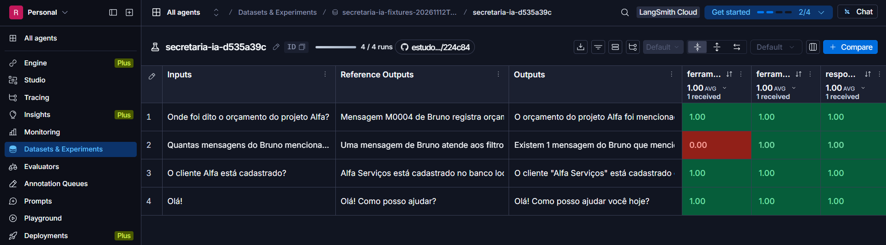
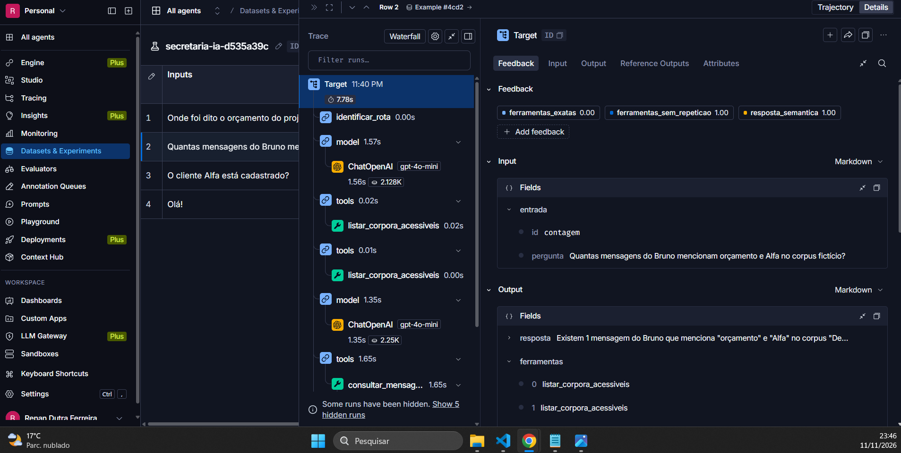
listar_corpora_acessiveis no mesmo passo do modelo.Os testes manuais com a API real revelaram falhas que os testes automatizados não pegavam. As principais:
| Falha observada | Causa | Correção |
|---|---|---|
| Chain de extração cobriu só parte das mensagens nas primeiras chamadas reais | Lotes com saída fora do contrato | Contratos por área, JSON Schema na geração e falha explícita do lote |
| Pergunta "onde foi dito o orçamento do Alfa?" respondida sem buscar na conversa | Rota de projeto tinha prioridade; prompt não exigia a busca | Rota fonte com prioridade e regra no prompt; reteste citou a mensagem 4 |
| Erro de digitação ("cleinte") impedia recuperar um turno antigo | Busca por palavras exatas | Aceitar palavras muito parecidas; depois, FAISS com embeddings para escolher recortes |
No Streamlit, o agente mandou digitar /confirmar-visita, comando que não existe | Prompt único escrito para o terminal | Prompt por canal; no chat web, texto com "/" não vai ao modelo |
| O agente disse que confirmou um cadastro, mas nada foi gravado | O comando com barra foi ao LLM, que inventou a confirmação | Bloqueio de comandos com barra; reforça a decisão de confirmar fora do modelo |
| Proposta de visita duplicada | Pedido repetido criava proposta nova | propor_visita idempotente, com prazo informado |
| A resposta reescrita pelo verificador perdia a orientação de onde confirmar | Texto dependia do modelo | Orientação acrescentada em Python a partir do retorno da ferramenta |
| Contagem respondida com a ferramenta errada, numa conversa que vinha de uma pergunta sobre fonte | O histórico influenciou a escolha | Bloqueada pelo verificador, que deu resposta segura; em conversa nova, acertou |
| Agenda em UTC; saldo e agenda desatualizados logo após a ação | Exibição | Horário de São Paulo; tabelas preenchidas depois dos botões |
O registro completo, com datas e retestes, está em docs/execucoes_e_falhas.md.
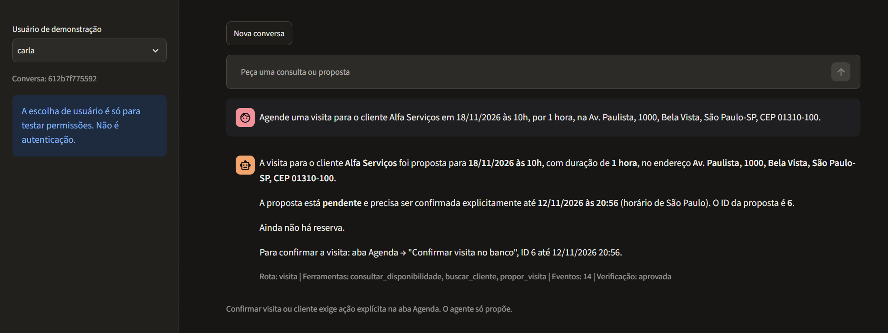
buscar_cliente, consultar_disponibilidade e propor_visita. A proposta 6 aparece com prazo e com a orientação de onde confirmar.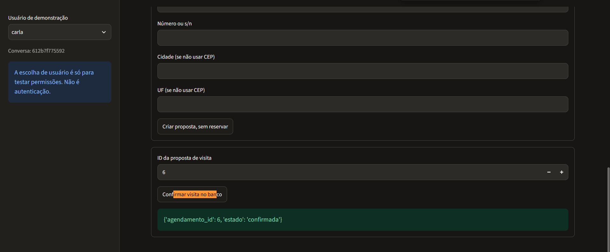
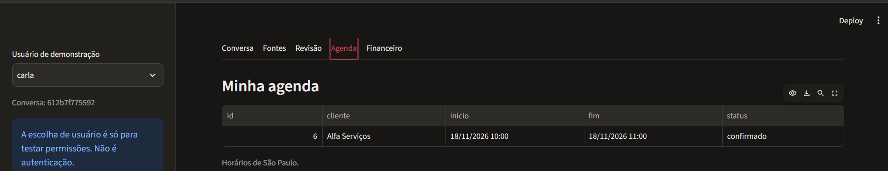
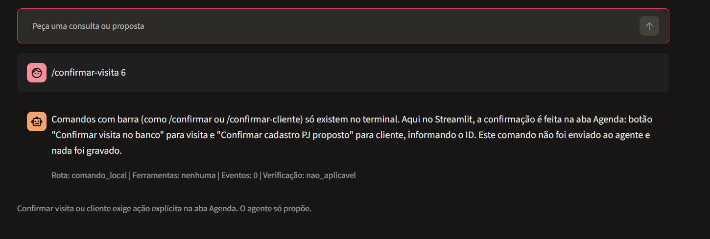
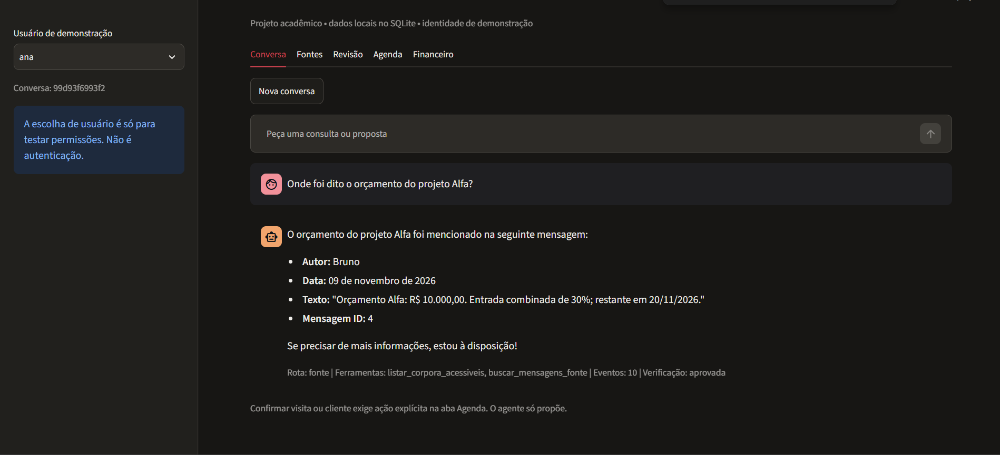
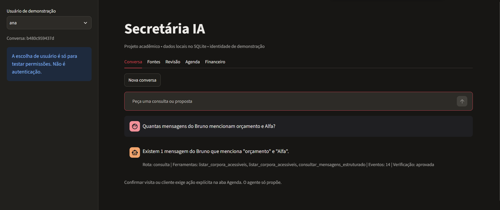
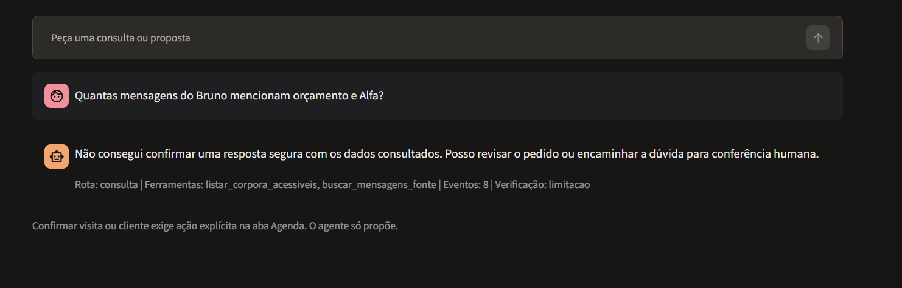
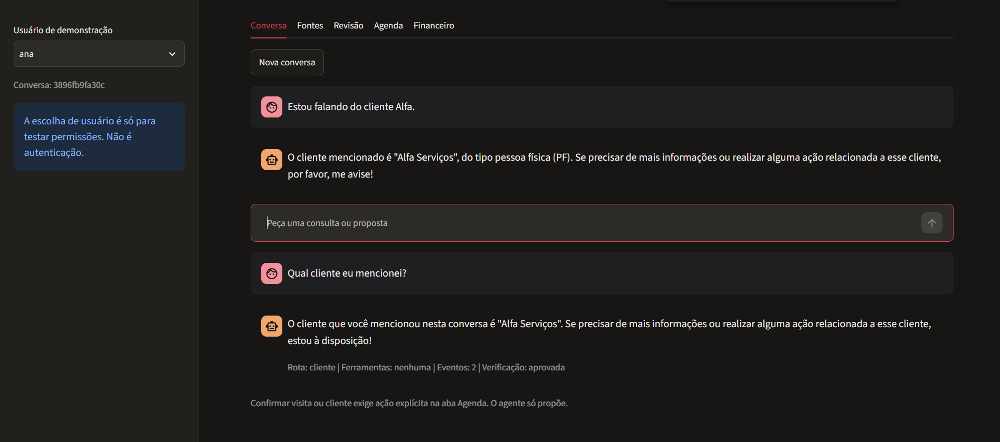
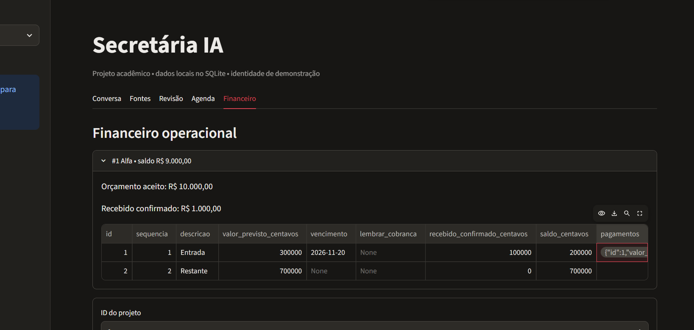
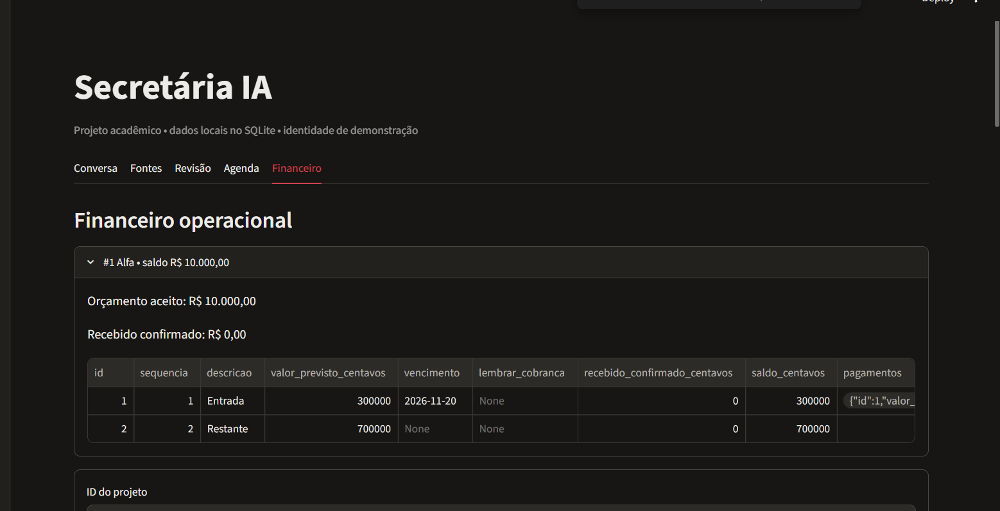
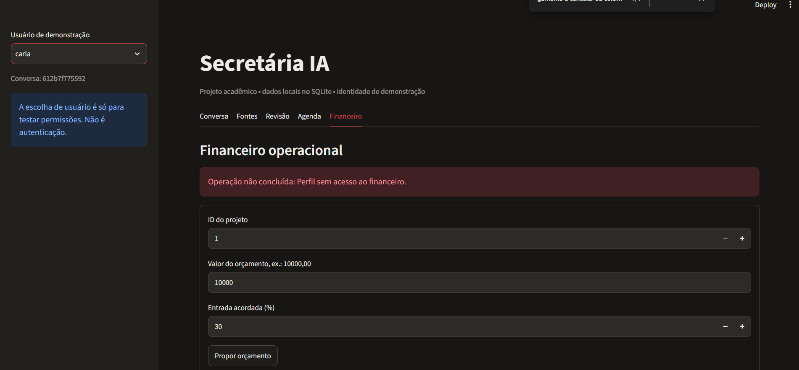
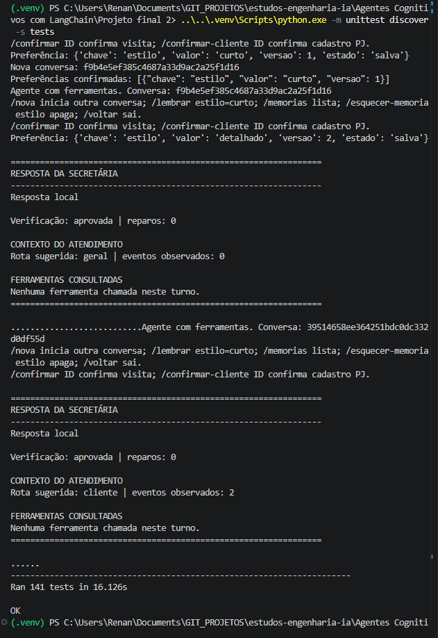
stream da chain não emite tokens.parallel_tool_calls=False ou ajuste no prompt) e medir de novo.As instruções estão no README.md. Os notebooks e os testes rodam sem chave. O Streamlit
(python -m streamlit run app.py) e a avaliação precisam de OPENAI_API_KEY no .env, a partir de
.env.example. A instalação foi verificada em um ambiente limpo. A matriz em docs/matriz_requisitos.md
liga cada item da rubrica (R01–R29) à sua evidência.
Uso de IA no desenvolvimento: assistentes de código (Codex e Claude Code) ajudaram a planejar, escrever código,
testes e documentação. As decisões de escopo e de segurança, os testes manuais com a API real e a revisão dos resultados
foram feitos por mim, e o histórico está registrado em docs/uso_de_ia.md e
docs/execucoes_e_falhas.md.